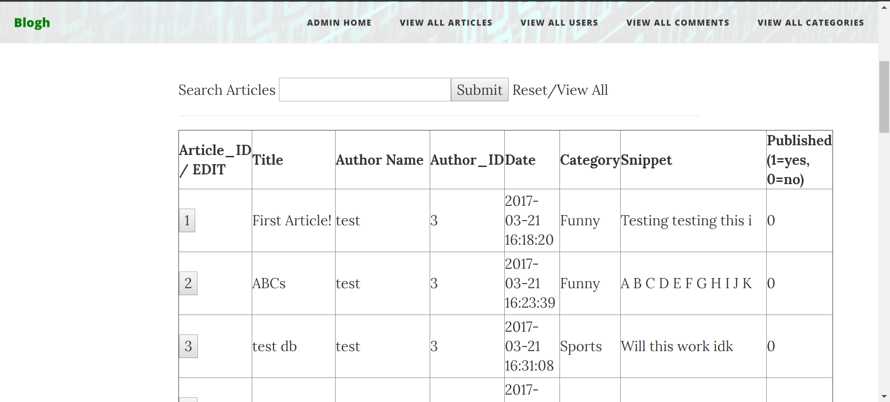

Griffin Cook
Systems Design Engineering @ University of Waterloo
ABOUT ME
PROJECTS
WORK EXPERIENCE
PROJECTS
Shottle
Components of the High Fidelity Prototype Including the Bottle and a Two-Piece Lid
Guitar Hero
Circuit that Displays Which Notes Need to be Played

Blogh
Home Page

Author's Page

Admin's Page For Editing Articles
You Can’t Hide
Opening Scene with Instructions for the Player

Hibernation

WORK EXPERIENCE
Backend Software Developer, XE.com Inc. [May - August, 2019]
- Actively sought out work and often created new tickets based on what needed to be done.
- Pitched new feature ideas and created prototypes, some of which became fully functioning features.
- Learned and executed DevOps practices using Gitlab CI/CD, and Terraform to manage AWS.
Frontend Full Stack Developer, SSIMWAVE [Sept - December, 2018]
- Implemented new features and designs for a web application using AngularJS, HTML and CSS.
- Worked directly with a designer and other developers to optimize the user experience of the UI.
- Created suggestions and recommendations for bettering the application, and followed through with developing them.
Systems Software Developer, XE.com Inc. [January - April, 2018]
- Developed projects from scratch, and worked on pre-existing projects, both on the backend and frontend, all in an agile work environment.
- Worked solely with new languages, libraries, and frameworks learned on the job, while managing to meet deadlines with constantly changing projects from sprint to sprint.